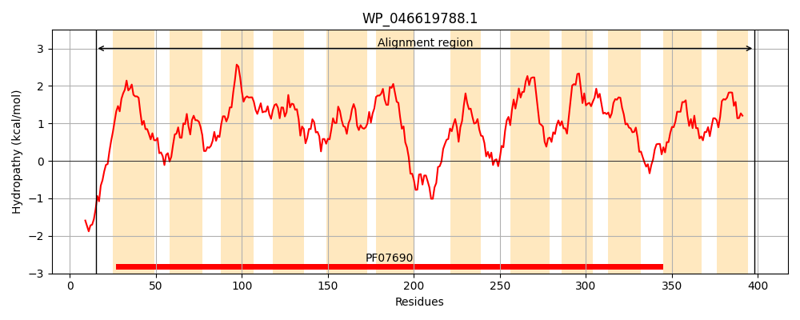
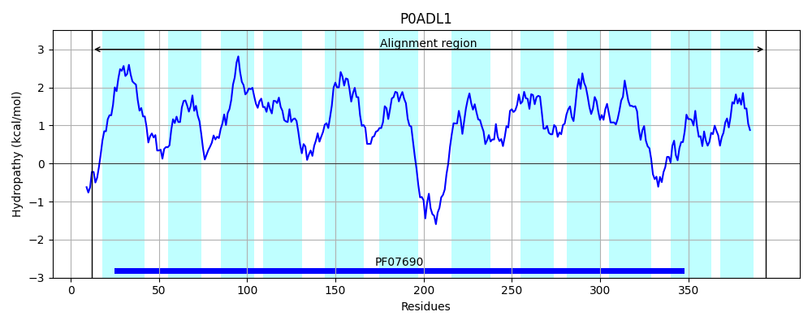

Hit Accession: P0ADL1
Hit TCID: 2.A.1.2.26
Hit Description: gnl|BL_ORD_ID|8755 gnl|TC-DB|P0ADL1|2.A.1.2.26 Purine ribonucleoside efflux pump nepI - Escherichia coli.
Mach Len: 384
e:0.000000
Query TMS Count : 12
Hit TMS Count: 12
TMS-Overlap Score: 11.800000
Predicted Substrates:CHEBI:8639;7H-purine, CHEBI:26399;purine ribonucleoside
BLAST Alignment:
Score: 708 , Bit scores: 277 bits, E-value: 3.7e-90, Alignment length: 384, Percentage identity: 36
Query: 15 DTSDNSNWNGVFAISLCVFALIASEFMPVSLLTPLAHDLGITEGTAGQGMTISGVFAVFTSLSIRRLAGTLNRKFLLLALTALMGLSAVLVALAPNYLIYMLGRAMIGVVIGGFWSMSVATAVRLVHISKVPRALAVFNGGNALATVVAAPLGSYLTAAISWRGAFLCLVPVAIITFVWQWISLPSMEPGKSGKTGSSVTSLLRKKNVAVGMCAAGIFFMGQFTLFTYIRPFLENVTKVNSDAVTLILLLIGVAGLAGTTAIGFVIKNRLYQTLVGIPLVMASVAVILIPMGNNIPTVCVLLGLWGVLSTAAPVGWWSWVASATASDTESGGGLMVATVQFSIALGSTVGGILFDQFGFQSTFALSAGILIFSAILTLWTSKLR 398
D NW+ VF+++ CV LI EF+PVSLLTP+A DLGI+EG AGQ +T++ A+F SL I + +R+++++ L+ LS +LV+ A ++ + ++GRA +G+ +GGFW+MS + +RLV VP+AL+V G ++A V+AAPLGS+L I WR F + ++ W SLPS+ PG+ + LL++ V GM A + F GQF FTYIRP N+ D +TL+LL G+A GT+ F++K + L G PL++A A++L G++ + +WG+ PVGW +W+ + A E G + VA +Q + G+ +GG D G S LS +++ +A+L K++
Sbjct: 12 DAITRPNWSAVFSVAFCVACLIIVEFLPVSLLTPMAQDLGISEGVAGQSVTVTAFVAMFASLFITQTIQATDRRYVVILFAVLLTLSCLLVSFANSFSLLLIGRACLGLALGGFWAMSASLTMRLVPPRTVPKALSVIFGAVSIALVIAAPLGSFLGELIGWRNVFNAAAVMGVLCIFWIIKSLPSL-PGEPSHQKQNTFRLLQRPGVMAGMIAIFMSFAGQFAFFTYIRPVYMNLAGFGVDGLTLVLLSFGIASFIGTSLSSFILKRSVKLALAGAPLILAVSALVLTLWGSDKIVATGVAIIWGLTFALVPVGWSTWITRSLADQAEKAGSIQVAVIQLANTCGAAIGGYALDNIGLTSPLMLSGTLMLLTALLVTAKVKMK 394 | Protein Hydropathy Plots: |
|---|
|  |  |
Pairwise Alignment-Hydropathy Plot:
|
|---|
 |